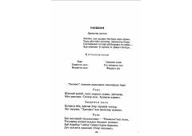

RJamiyatdagi illatlar va g'iybatni fosh etuvchi o'tkir satirik doston.
Abdulla Oripovning ushbu dramatik dostoni jamiyatdagi illatlar, g'iybat va odamlarni asossiz ranjitishga qaratilgan yovuz niyatli tashkilot faoliyatini fosh etadi. Asar satirik yo'nalishda yozilgan bo'lib, insoniy qadriyatlarning qadrsizlanishi va ma'naviy tubanlik oqibatlarini ko'rsatib beradi.